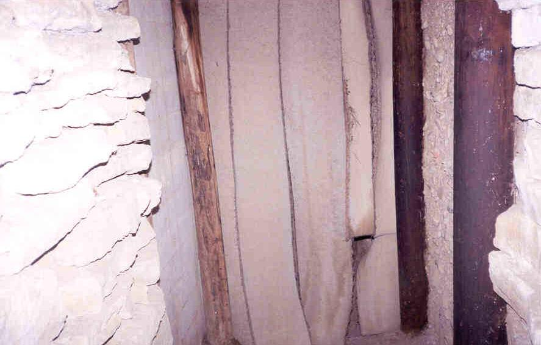
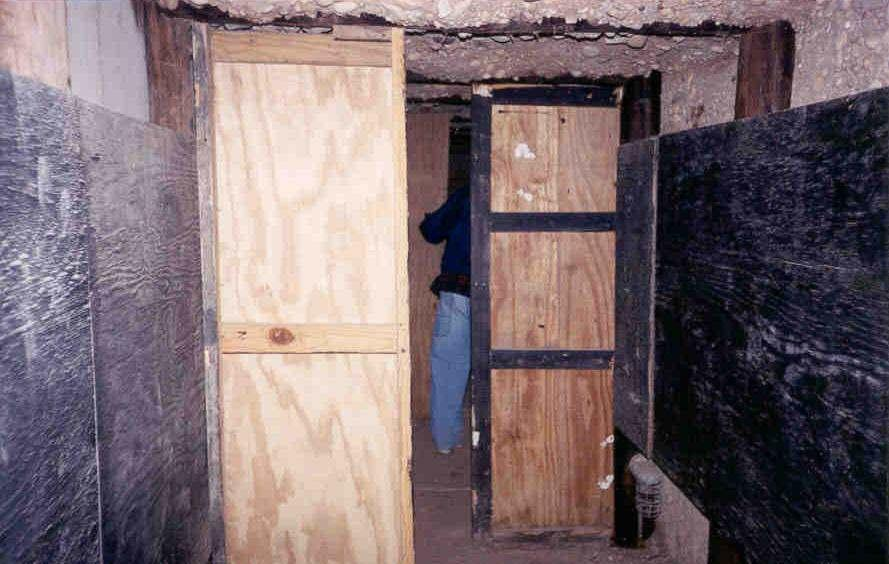
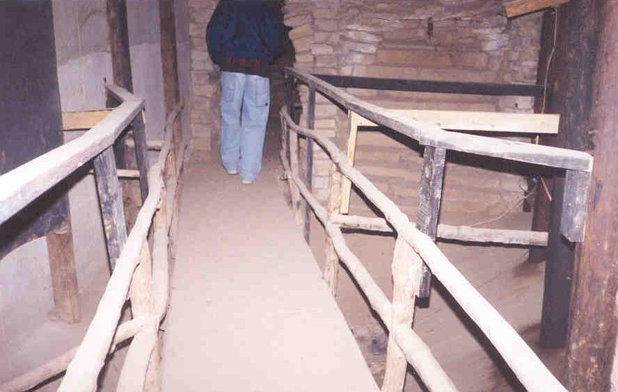
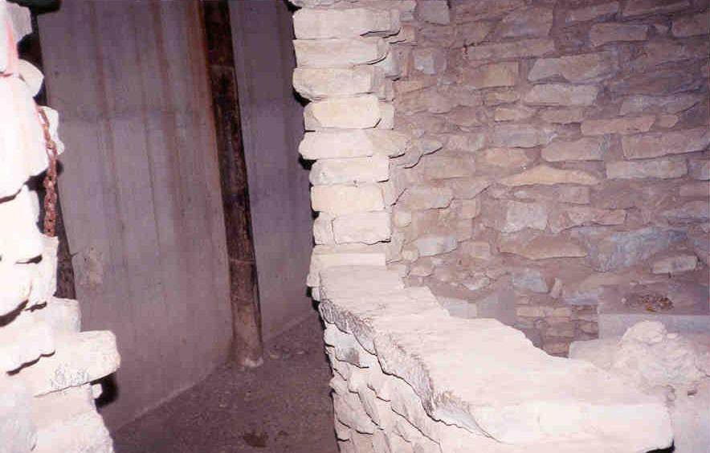

Under an abandoned house (the former Haunted House) near the front gate of the Fantasy Farm is a network of forgotten tunnels where they used to have the "Tom Sawyer's Caverns" ride. From what I read, the rides went through on miniature train cars, and admission was a dollar.

Covering the entrance when we stumbled across it were hanging strips of carpet. The tunnel turns abruptly, so that once you're inside it's pitch black. Plywood half-walls alternating on the right and left sides keep light from filtering in.

Along the way were stone chambers with open windows where the monsters (or maybe Injun Joe) could wait to scare people. The walls had bright orange spraypaint on them in places, pointing the way.

My personal favorite part of the cavern tunnels was the bridge, which, in the dark, felt like it might span a hundred-foot drop. When we saw it later with a flashlight, of course, the drop was more like six inches. When the place was in operation water flowed under here.


The other entrance--the exit, I guess--was blocked very well with a section of chain-link fence, so we headed back out the way we came in. I would love to make a movie in these tunnels.
Back